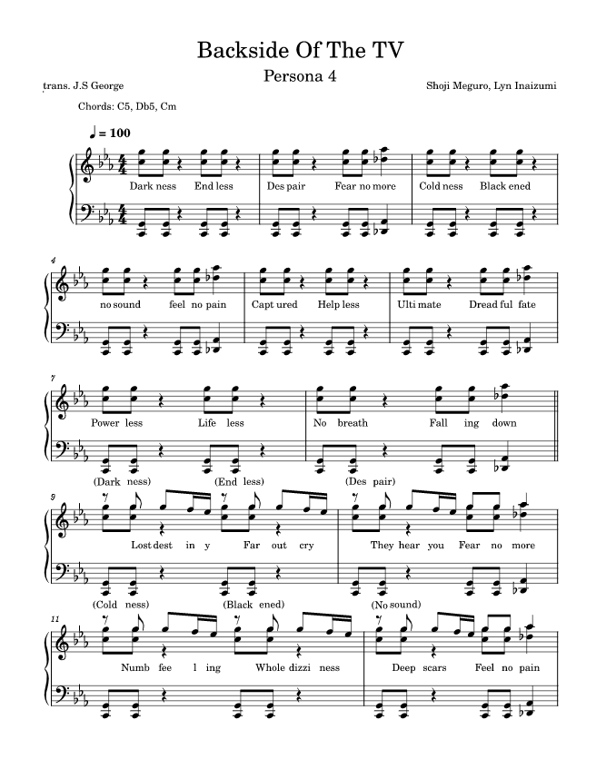
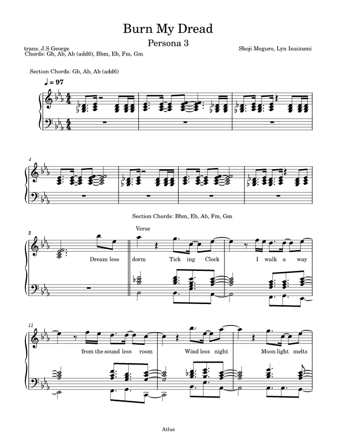
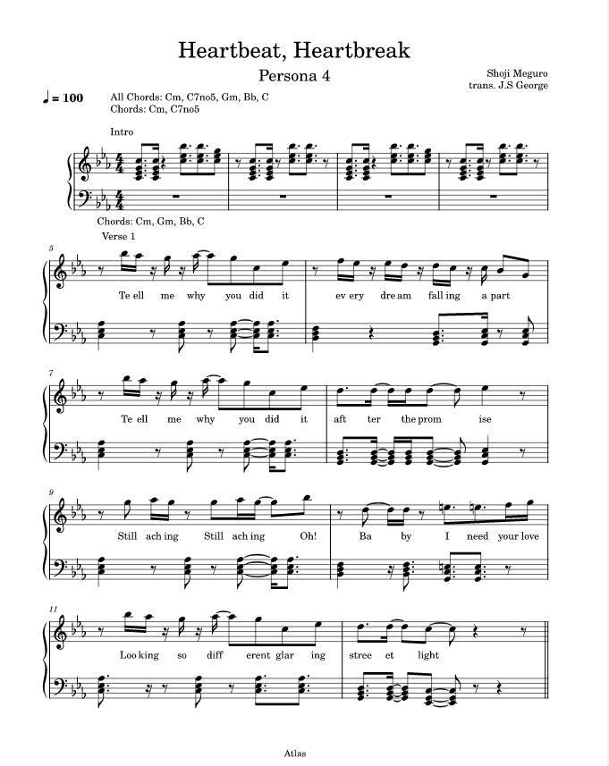
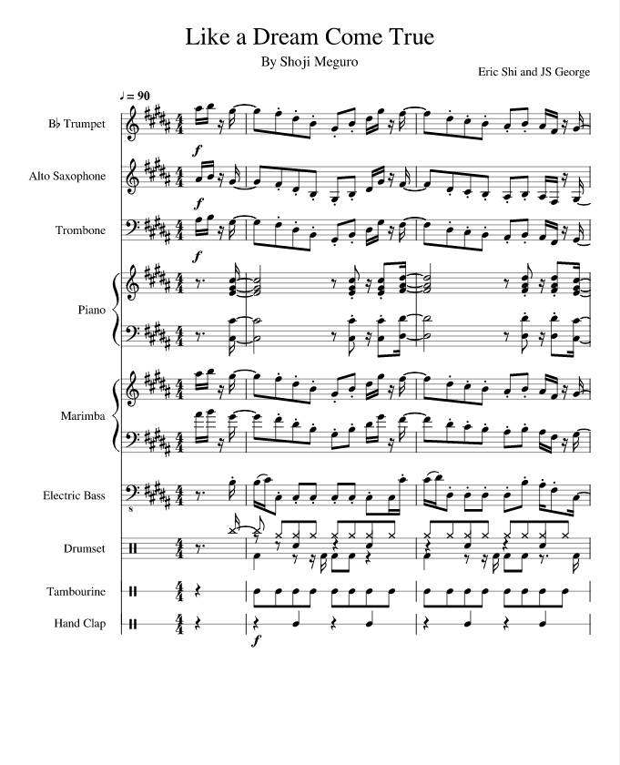
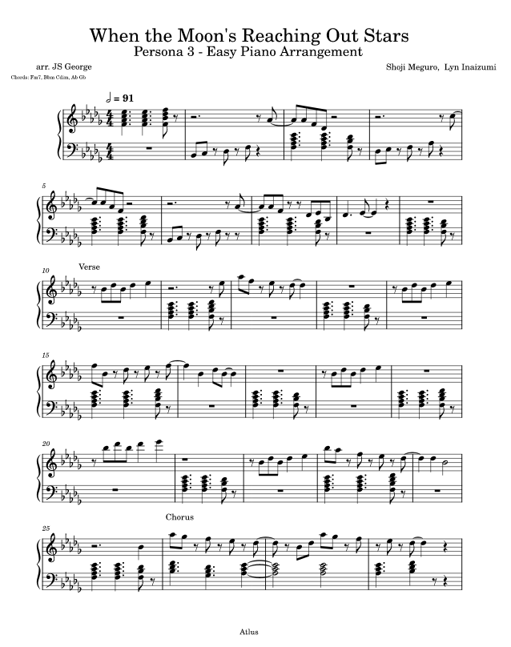

Johan George
Home
My Services
Contact
My Services
Transcription
I'll transcribe a piece of music for you.
I’ll provide you with a pdf of the sheets, a chord chart or to your specifications. Some of my work can be seen here:

Backside Of The TV - Shoji Meguro (Persona 4)

Burn My Dread - Shoji Meguro (Persona 3)

Heartbeat, Heartbreak - Shoji Meguro (Persona 4)
Arrangement
I'll arrange a piece for you.
I have most experience with:
Marching Band, Concert Band, Small Wind Ensemble, Small Strings Ensemble, and Rock Band (electric guitars, bass and drums)
but I am pretty flexible.
Some of my work can be seen here:

Like A Dream Come True - Shoji Meguro (Persona 4)
I'll Face Myself - Shoji Meguro (Persona 4)

When the Moon's Reaching Out Stars - Shoji Meguro (Persona 3)
Composition
I'll compose a piece for your project.
I can write 8-bit and 16-bit music, and master music in any of the ensembles stated above (see Arrangement).
I’ll usually write my music in Musescore then master in Cubase.
Hire Me!